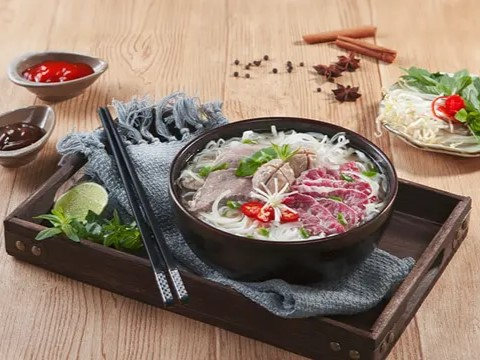
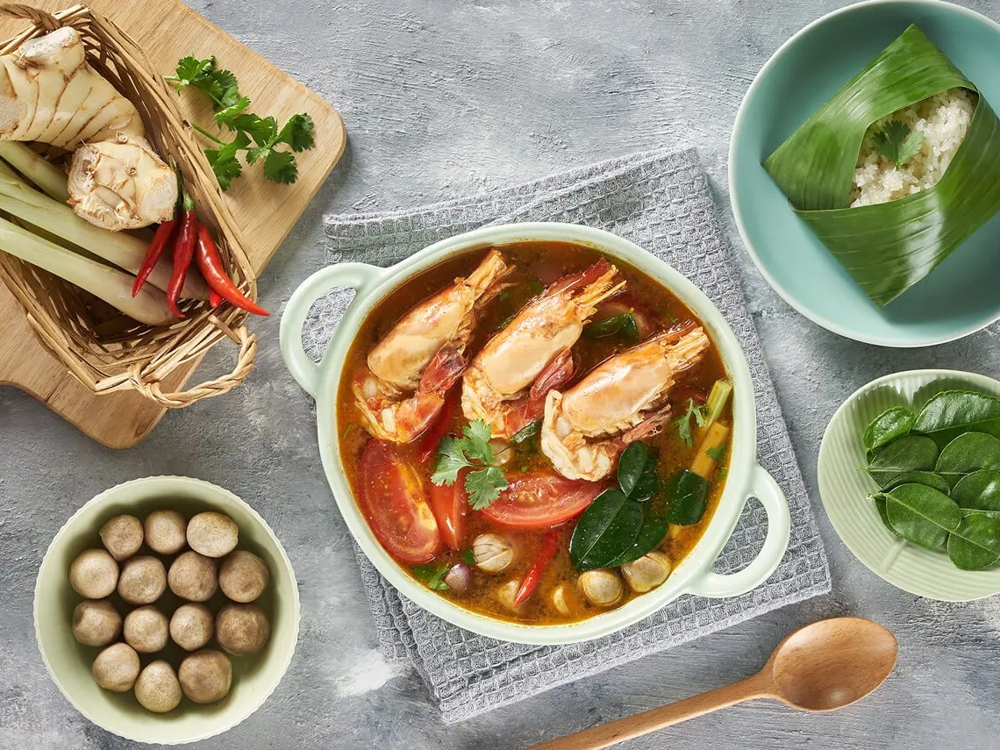
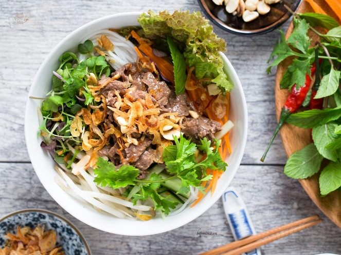
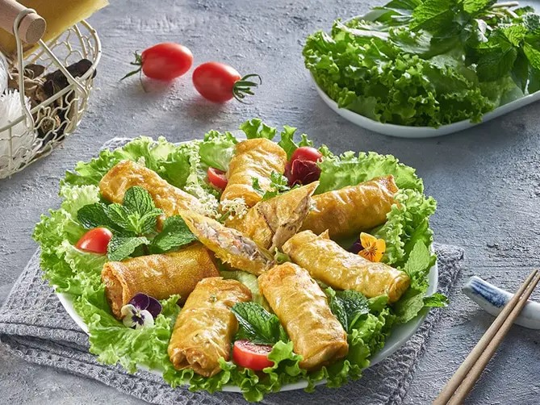
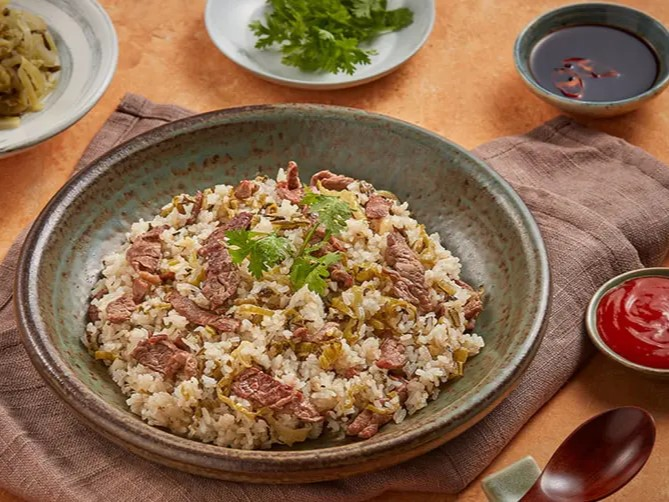

О нас
Вьетнамская кухня - компания, специализирующаяся на доставке вкусных и полезных бизнес-ланчей в Москве. Мы заботимся о ваших предпочтениях и качестве продуктов.
Наши преимущества
- Основатели компания "Вьетнамская кухня"- настоящая вьетнамская семья, которая видит своей миссией - передать вкус и атмосферу Вьетнама всем ценителям азиатской кухни.
Чтобы каждый гурман смог ощутить неповторимый вкус настоящей домашней вьетнамской еды. - Большинство продуктов доставляется напрямую из Вьетнама, это позволяет сохранить традиционные рецепты в том виде, в котором они существуют на протяжении веков.
Поварской состав - коренные вьетнамцы, которые сохраняют кулинарные традиции своих бабушек и дедушек в каждом блюде. - Мы отдаем предпочтение только самым свежим и натуральным продуктам. Мы стремимся готовить не только вкусно, но и полезно.
Приятным показателем качества нашей работы является то, что у нас появляется все больше и больше посетителей семейных.
Которые с удовольствием заказывают наши блюда не только для себя, но и для своих детей. - Быстрая доставка. Обеспечение того, чтобы еда всегда была в лучшем виде, когда она доходит до клиентов.
- Доставляем ланчи весь день с 7:00 до 23:00.
Популярные блюда
| Блюдо | Описание | Фото | Цена (руб.) |
|---|---|---|---|
| СУП ФО-БО | Национальный вьетнамский суп, сытный, наваристый и ароматный.
Состав: говяжий бульон (кости телят), мякоть телятины, лапша рисовая, лук репчатый, пророщенный маш, лук зеленый, бадьян, корица, кориандр, кардамон, мята, перец черный, соль. |
 | 400 |
| ТОМ ЯМ | Состав: креветки, куриный бульон, кальмары, шампиньоны, помидоры, кокосовое молоко. |  | 550 |
| БУН ЧОН (с говядиной) | Рисовая фунчоза, мясо говядины приготовленное на воке, свежая морковь, свежие огурцы, зеленый лук, пророщенная соя, листовой салат, домашний вьетнамский соус. |  | 550 |
| НЕМ (голубцы по ханойски) | Нежные с пикантным вкусом. Состав: рисовая бумага, куриный фарш, вьетнамские черные грибы, креветки, фунчоза, лук, вьетнамская приправа. |  | 450 |
| КОМРАНГ с говядиной | Плов по вьетнамски на воке.
Вареный рис обжаривается с кукурузой, зеленым горошком, вареным яйцом, вьетнамскими специями. |
 | 450 |
| БУН ЧА | Голубцы Нем 2 шт., котлетки по ханойски Ча Ныонг (фарш жаренный на масле с приправами) 2 шт., фунчоза, салат, овощи и специальный уксус для блюда. |  |
550 |